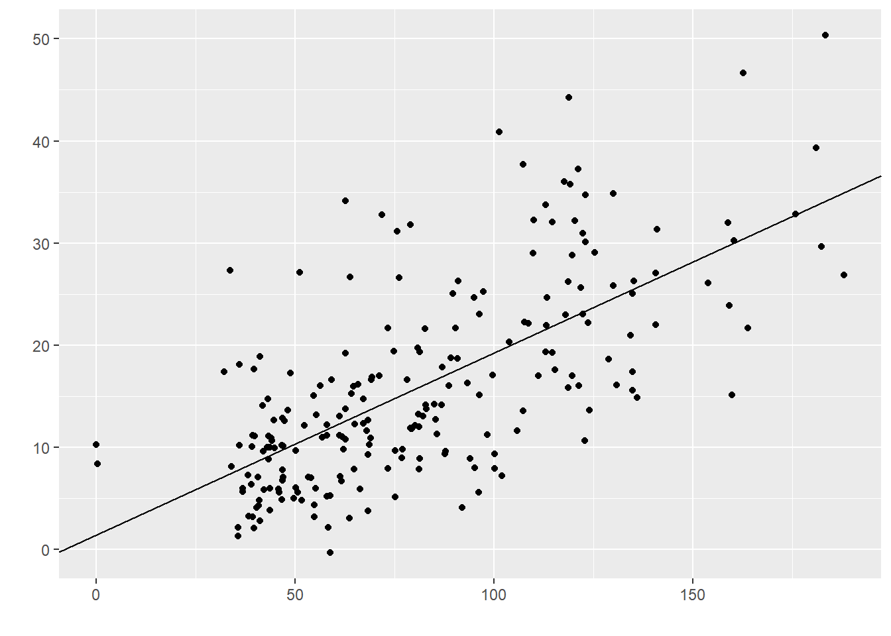

Cap. 15 Regressão logística binária
GLOSSÁRIO
Modelo Linear Generalizado: Classe de modelos compostos por uma função de ligação, preditores lineares e uma distribuição de probabilidades. São ampliações de modelos lineares.
Função de ligação: Termo que associa os valores esperados da resposta aos preditores lineares no modelo.
Logit: Uma função de ligação que transforma probabilidades em chances.
Risco: Probabilidade ou proporção.
Chance ou Odds: Caso particular de uma razão em que o numerador não está contido no denominador. Tradução para Odds.
Razão de Chances ou Odds Ratio: Medida de tamanho de efeito que indica a chance de ocorrência de um desfecho em um grupo quando comparado a outro. Seus valores variam entre 0 e infinito.
A regressão logística é um modelo estatístico que permite estimar a chance da ocorrência de um determinado desfecho categórico (Y) em função de um ou mais preditores (X), que podem ser contínuos ou categóricos. Quando a variável dependente apresenta apenas dois níveis ou classes, a regressão é chamada de binária. Quando há mais níveis ou classes, é chamada de multinomial.
Assim, é possível entender a regressão logística como um complemento da regressão linear aplicada a variáveis categóricas a partir de uma função de ligação ou, de maneira geral, um caso particular da famiília dos modelos lineares generalizados (GLM), que implementa uma ligação logit.
Conceitualmente, neste modelo há os seguintes termos:
\[\underbrace{ln\left ( \frac{P}{1-P} \right)}_\text{logit} = b_0+b_1X_1+ \dots + b_iX_i\]
Onde:
\(P\) representa a probabilidade de um desfecho ocorrer
\(1-P\) representa a probabilidade de um desfecho não ocorrer
\(ln\left ( \frac{P}{1-P} \right)\) representa uma transformação logit variável dependente
\(b_0\) é o intercepto
\(b_i\) indica os preditores
Os seguintes pressupostos devem ser investigados:
(i) Os dados são aleatórios e representativos da população
(ii) A variável dependente é dicotômica/binária
(iii) Os preditores não apresentam alta correlação
(iv) Há uma relação linear entre preditores contínuos e o logit do desfecho
Há muitas aplicações de modelos logísticos. Em áreas de saúde, eles tendem a ser os modelos de primeira escolha para verificar possíveis condições clínicas e de agravo à saúde. Em Psicologia, por exemplo, ele é util para descrever e investigar os possíveis preditores de condições diagnósticas bem definidas, tal como TDAH e outros transtornos psiquiátricos. Em epidemiologia, eles são fundamentais em estudos do tipo caso-controle.
Algumas condições são importantes:
(1) A variável dependente nesta equação é um transformação logit da probabilidade da presença de um determinado desfecho. Ela não é, por definição, uma probabilidade, mas sim uma função.
(2) Não há a definção de um termo de erro (tal como nos modelos de regressão linear) e
(3) o desfecho é assumido seguir uma distribuição binomial.
Como exposto, os resultados da regressão logística informam sobre chances (Odds) e Razão de chances (Odds Ratio) e não sobre probabilidades, diretamente. Existem muitas formas de demonstrar esta diferença. Entretanto, julgo que a forma mais simples é ilustrá-la matematicamente.
Uma probabilidade é uma razão entre uma parte contra o todo (Tudo o que tenho sobre tudo o que posso quero, em jargão pedagógico). A chance é uma razão em que o numerador é uma probabilidade e o denominador é seu complemento. A figura a seguir ilustra essa diferença.

É legítimo ter dificuldade na interpretação do conceito, além de questionar o motivo pelo qual ele é tão utilizado nestas áreas. No entanto, uma ajuda interpretativa é lembrar que a probabilidade, maior também serão as chances de um determinado evento. A relação entre ambos tem o seguinte formato.

A métrica Razão de chances (Odds Ratio ou OR) é utilizada como uma medida de tamanho de efeito que se dá pela comparação entre dois grupos.
Como em áreas de saúde, tradicionalmente, o interesse é verificar situações clínicas, quanto maior for o OR, maior será a chance da ocorrência de um desfecho negativo em um determinado grupo em comparação à outra e, consequentemente, maior o risco.
Neste sentido:
| Chance | Probabilidade | Interpretação |
|---|---|---|
| < 1 | < 50% | Fator de risco |
| = 1 | 50% | Fator neutro |
| > 1 | > 50% | Fator de proteção |
15.1 Pesquisa
A base desta pesquisa está disponível em formato R (Rdata) e em CSV, que é lido pelo JASP. Clique na opção desejada.
R Base: Base R - Headache anonymous
Base JASP : Base CSV - headache (no names)
Neste capítulo, vamos utilizar a pesquisa intitulada “Resilience and vulnerability in adolescents with primary headaches: a cross-sectional population-based study”, publicada em 2021 no Headache, que sou coautor.
Essa é uma pesquisa censitária, que contou com todos os 339 estudantes de uma cidade pequena no interior do Brasil. O estudo visou mapear as possíveis condições de baixos recursos psicológicos e alta vulnerabilidade em adolescentes portadores de enxaqueca de diferentes tipos e intensidades. Na literatura médica internacional, são raros os estudos com finalidade epidemiológica descritiva sobre enxaqueca. No Brasil, por sua vez, este nosso estudo foi o primeiro. Esse fato marcou o caráter inovador da pesquisa e também permitiu impactar positivamente o trabalho de clínicos que, em seu dia a dia, lidam com jovens com tais características.
Para definir o tipo e a frequência da dor de cabeça, os participantes responderam a diferentes questionários médicos. Por sua vez, para verificar um possível risco de participantes enxaquecocos apresentarem baixos recursos psicológicos e alta vulnerabilidade, eles foram submetidos à escala Resiliency Scales for Children and Adolescents, que foi desenvolvida justamente para medir tais condições.
Uma dos objetivos que tivemos na execução das análises foi verificar quais eram os preditores significativos que poderiam impactar na probabilidade de um adolescente estar no grupo de risco de vulnerabilidade psicológica. Os preditores de interesse foram a idade da criança (age), sua etnia (race), sexo (sex), classe sócioeconômica (ses), problemas de sono (sleeping), prematuridade (premature), fumo durante a gestão (smoking), uso de álcool durante a gestação (alcohol) e possível TDAH (sdq_risk).
Para isso, modelos de regressão logística binária foram utilizados.
15.2 Execução no R
A primeira etapa da análise é realizada pelo desenvolvimento de tabelas e gráficos que possam auxiliar na interpretação dos resultados. De maneira similar à feita em outros capítulos, abaixo há uma tabela descritiva.
arsenal::tableby(risk_cefaleia_resources ~
age + race + sex + ses + sleeping + premature + smoking + alcohol + sdq_risk,
base_uso) %>% summary() | 0 (N=312) | 1 (N=27) | Total (N=339) | p value | |
|---|---|---|---|---|
| age | 0.179 | |||
| Mean (SD) | 13.929 (2.068) | 13.370 (2.060) | 13.885 (2.070) | |
| Range | 10.000 - 18.000 | 11.000 - 18.000 | 10.000 - 18.000 | |
| race | 0.782 | |||
| N-Miss | 10 | 0 | 10 | |
| white | 220 (72.8%) | 19 (70.4%) | 239 (72.6%) | |
| Other | 82 (27.2%) | 8 (29.6%) | 90 (27.4%) | |
| sex | 0.065 | |||
| Male | 150 (48.1%) | 8 (29.6%) | 158 (46.6%) | |
| Female | 162 (51.9%) | 19 (70.4%) | 181 (53.4%) | |
| ses | 0.507 | |||
| AB | 83 (26.6%) | 10 (37.0%) | 93 (27.4%) | |
| C | 189 (60.6%) | 14 (51.9%) | 203 (59.9%) | |
| DE | 40 (12.8%) | 3 (11.1%) | 43 (12.7%) | |
| sleeping | 0.215 | |||
| N-Miss | 7 | 0 | 7 | |
| no | 296 (97.0%) | 25 (92.6%) | 321 (96.7%) | |
| yes | 9 (3.0%) | 2 (7.4%) | 11 (3.3%) | |
| premature | 0.524 | |||
| N-Miss | 4 | 2 | 6 | |
| no | 272 (88.3%) | 21 (84.0%) | 293 (88.0%) | |
| yes | 36 (11.7%) | 4 (16.0%) | 40 (12.0%) | |
| smoking | 0.886 | |||
| N-Miss | 1 | 1 | 2 | |
| no | 243 (78.1%) | 20 (76.9%) | 263 (78.0%) | |
| yes | 68 (21.9%) | 6 (23.1%) | 74 (22.0%) | |
| alcohol | 0.845 | |||
| N-Miss | 2 | 1 | 3 | |
| no | 278 (89.7%) | 23 (88.5%) | 301 (89.6%) | |
| yes | 32 (10.3%) | 3 (11.5%) | 35 (10.4%) | |
| sdq_risk | < 0.001 | |||
| no | 287 (92.0%) | 19 (70.4%) | 306 (90.3%) | |
| yes | 25 (8.0%) | 8 (29.6%) | 33 (9.7%) |
Essa tabela oferece uma primeira informação sobre os dados e poderia ser utilizada também para computar vários testes Qui-quadrado. Entretanto, o qui-quadrado serviria para verificar relacionamentos bivariados, mas não controlaria os resultados pelas outras variáveis de interesse. Apesar de ser possível fazer alguns ajustes particulares ou utilizar o teste de Cochran–Mantel–Haenszel, a regressão logística é a modelagem mais adaptada para lidar com esta situação.
Para executar esse tipo de regressão no R, será necessário usar a função nativa glm e deixar claro que a família é a binomial. Isso indicará que o desfecho é binário e que a função logit deverá ser implementada na equação.
O vetor mod_risco será criado e reunirá os resultados do modelo de regressão logística.
mod_risco <- glm(risk_cefaleia_resources ~
age + race + sex + ses + sleeping + premature + smoking + alcohol + sdq_risk,
family = "binomial", data = base_uso)Há muitas formas de apresentar os resultados e o pacote sjPlot tem ótimas funções para isso. A tabela produzida gera o Odds Ratio de cada preditor, seu intervalo de confiança, a estatística de teste e o valor de P. Ao fim da tabela, a quantidade de observações utilizada e uma medida de ajuste (\(R^2\)) é apresentada.
| risk cefaleia resources | ||||
|---|---|---|---|---|
| Predictors | Odds Ratios | CI | Statistic | p |
| (Intercept) | 2.51 | 0.08 – 86.90 | 0.52 | 0.605 |
| age | 0.82 | 0.64 – 1.03 | -1.63 | 0.104 |
| race1 | 1.07 | 0.60 – 1.78 | 0.23 | 0.817 |
| sex1 | 1.75 | 1.08 – 3.06 | 2.15 | 0.032 |
| ses1 | 0.71 | 0.42 – 1.20 | -1.29 | 0.197 |
| ses2 | 0.98 | 0.58 – 1.51 | -0.08 | 0.938 |
| sleeping1 | 1.09 | 0.36 – 2.66 | 0.17 | 0.868 |
| premature1 | 1.26 | 0.64 – 2.23 | 0.75 | 0.456 |
| smoking1 | 0.94 | 0.47 – 1.71 | -0.20 | 0.840 |
| alcohol1 | 0.98 | 0.43 – 1.94 | -0.06 | 0.951 |
| sdq_risk1 | 2.74 | 1.59 – 4.73 | 3.67 | <0.001 |
| Observations | 314 | |||
| R2 Tjur | 0.101 | |||
Essa apresentação não verifica se o modelo testado é mais informativo do que um modelo nulo, mas apenas assume esta condição. Testá-la é particularmente importante em modelos com menos variáveis e isso pode ser feito pela função nativa Summary.
#deviance do modelo nulo
base_uso %>%
filter(across(c(age,race,sex,ses,sleeping,premature,smoking,alcohol,sdq_risk), ~!is.na(.x))) %>%
glm(risk_cefaleia_resources ~ 1, family = "binomial", data = .) %>% summary()
#deviance do modelo testado
mod_risco %>% summary()Nesta tabela, a primeira interpretação a ser feita é relacionada ao \(R^2\), que está localizado na parte inferior. Existem diferentes maneiras de calculá-lo e sua interpretação não é igual à feita na regressão linear. Enquanto na regressão linear, o \(R^2\) se refere à proporção da variância explicada, em modelos logísticos, no geral, o \(R^2\) indica o quanto o modelo testado é próximo de um modelo com ajuste perfeito aos dados (saturado) (Portugues, 2020).
O \(R^2 \, de \, Tjur\) é a medida utilizada nesta apresentação e seus valores variam entre 0 e 1. Ele é feito verificando a diferença entre os dados e os valores previstos pelo modelo testado. Quão maior o valor, mais discriminativo é o modelo testado. Neste caso, o o \(R^2 \, de \, Tjur\) foi de 0.10.
A segunda interpretação é baseada nos Odds Ratio (OR) e sugere alguma com atenção: o OR indica a chance de ocorrência de um desfecho caso o preditor analisado tenha ocorrido, em comparação com sua não ocorrência. Ele não indica diretamente sobre a probabilidade, apesar disso ser possível de ser feito.
Os preditores sex[female] e sqd_risk foram significativos. A interpretação pode ser feita da seguinte maneira:
- A chance do participante vir a apresentar baixo recurso psicológico é 3.07 maior em meninas do que em meninos.
- A chance do participante vir a apresentar baixo recursos psicológico é 7.53 maior em participantes com TDAH do que em participantes sem TDAH..
Eventualmente, variáveis contínuas também podem ser significativas. Caso a variável age tivesse sido significativa, sua interpretação poderia ser:
- O aumento de 1 ano de idade impacta a chance de vir a apresentar baixos recursos psicológicos em 0.82, indicando uma característica protetiva.
A apresentação desses resultados é muito beneficada por gráficos e o Forest plot pode ser utilizado. Neste gráfico, o eixo horizontal apresenta os valores possíveis de OR (\(0-\infty\)) e o eixo vertical todos os preditores analisados. A interpretação é feita em contraste ao valor 1, que está ao centro e indica que os resultados não são distintos entre os grupos ou níveis da variáveis. Valores de OR acima de 1 se situam à direita e indicam um possível fator de risco. Valores de OR abaixo de 1 se situam à esquerda e indicam um possível fator protetivo.
sjPlot::plot_model(mod_risco,
grid = FALSE,
show.values = TRUE, value.offset = .3,
colors = "bw",
vline.color = "darkgray") +
scale_x_discrete(labels = function(x) str_wrap(x, width = 10)) +
theme_bw() +
theme(legend.position = "top")
Caso haja interesse, é também possível computar as probabilidades e adicioná-las à tabela aplicando \(Odds/(1+Odds)\). Ao fazer isso, uma nova informação será apresentada e poderá ter alguma utilidade para interpretar preditores variáveis categóricas. Tradicionalmente, isso não é feito.
Atenção: A validade das inferências dos resultados depende da adequação ou não dos pressupostos dos testes estatísticos. A avaliação destas condições é parte de um procedimento diagnóstico que deve ser sempre feito.
Um aspecto importante é que a validade da interpretação dos resultados depende dos pressupostos do modelo estatístico. A violação destes pressupostos distorce, limita ou invalida as interpretações teóricas propostas, uma vez que tanto o aumento do erro do tipo 1 (falso positivo), como do tipo 2 (falso negativo) podem ocorrer (Barker & Shaw, 2015; Ernst & Albers, 2017; Lix et al., 1996). Corriqueiramente, testar os pressupostos é uma etapa anterior à própria realização do teste inferencial. Entretanto, pedagogicamente a apresentação deles após a execução do teste parece mais adequada. Assim, eles serão testados a seguir.
Multicolinearidade. A multicolinearidade pode ser investigada pela análise chamada Variance Inflaction Factor (VIF). Essa análise verifica o quão correlacionados são os preditores e gera um resultado numérico. Valores abaixo de 4 são tipicamente utilizados para indicar que os preditores não são fortemente correlacioandos e, consequentemente, considerar este pressuposto atendido.
| GVIF | Df | GVIF^(1/(2*Df)) | |
|---|---|---|---|
| age | 1.035 | 1 | 1.017 |
| race | 1.112 | 1 | 1.055 |
| sex | 1.078 | 1 | 1.038 |
| ses | 1.294 | 2 | 1.067 |
| sleeping | 1.17 | 1 | 1.082 |
| premature | 1.017 | 1 | 1.009 |
| smoking | 1.365 | 1 | 1.168 |
| alcohol | 1.155 | 1 | 1.075 |
| sdq_risk | 1.162 | 1 | 1.078 |
Relação linear entre preditores contínuos e o logit. O pacote sjplot também pode ser utilizado para testar este pressuposto. Não há um teste formal específico para este pressuposto e, com isso, a decisão é baseada na visualização do relacionamento.

O gráfico não sugere desvio da linearidade. Com isso, esse pressuposto é considerado mantido.
Após essas análises, é possível interpretar os resultados.
15.3 Execução no JASP
Inicialmente, é necessário carregar a base intitulada “Base CSV - headache (no names)” para o ambiente JASP. Essa base apresenta as variáveis que foram pesquisadas, bem como um conjunto de variáveis auxiliares que serviram para responder a outras perguntas.
Inicialmente, a apresentação de tabelas e gráficos é sempre muito importante e pode ser feito ao clicar na opção Descriptives.

Ao clicar nesta opção, a interface do JASP ser próxima à exposta a seguir. É possível eleger as variáveis que irão ser analisadas e as variáveis que irão funcionar como agrupadores.

Neste caso, o interesse é agrupar os resultados pelo risco do participante apresentar baixo recurso. Neste sentido, a variável risk_cefaleia_resources deve ser inserido na parte Split e as variáveis age, race, sex, ses, sleeping, premature, smoking, alcohol e sdq_risk deverão ser inseridas em Variables.
Para a apresentação ficar adequada à escala de medida, é necessário marcar a opção Frequency tables (nominal and ordinal variables).

A tabela apresentada será bastante informativa e pode ser utilizada também para uma apreensão inicial dos dados. Variáveis contínuas serão resumidas por suas médias e desvios-padrão e variáveis categórias serão apresentadas por contagens e proporções.
Gráficos tendem a ser úteis também para verificar o formato da distribuição dos dados. o JASP permite realizá-los clicando em Plots.

Como há variáveis contínuas (age) e variáveis categóricas (sex, etc) o ideal é apresentar tanto boxplots como gráficos de barras. Ao clicar na opção Boxplot e Distribution plots, o JASP irá realizar todos os gráficos e apresentar ao lado direito.

A análise conjunta da tabela previamente realizada e os gráficos pode ser feitas. Apesar deste procedimento inicial não ser uma etapa fundamental, ele tem sua aplicação em aspectos descritivos da estatística. Com isto feito, é possível fazer a regressão logística.
Para execução da regressão logística, será necessário clicar em Regression e Logistic Regression.

A tela do JASP irá apresentar algumas opções. O local Dependent variables é onde a VD será inserida. Repare que o JASP somente permitirá variáveis nominas ou ordinais neste espaço. Covariates é o local onde as VIs contínuas serão colocadas e Factors é onde as VIs categóricas serão colocadas.

Para realizar o modelo, será necessário levar a risk_cefaleia_resources para Dependent Variable. Em seguida, age para seção Covariates e race, sex, ses, sleeping, premature, smoking, alcohol e sdq_risk para Factors. Ao fazer isso, o JASP irá fazer as principais análises e apresentar os resultados em uma tabela específica, ao lado direito da tela.

É fácil notar que os resultados apresentados são muitos. É recomendado uma ordem específica para interpretá-los.
Em primeiro momento, é importante verificar o ajuste do modelo na seção Model summary, na parte superior dos resultados. O JASP compara o modelo ajustado H1 contra um modelo nulo H0 em uma métrica de desvio (Deviance) e pelos critérios de informação de Akaike (AIC) e Bayesiano (BIC). De maneira similar à regressão linear, H0 indica o modelo mais simples possível (sem preditores) e H1 indica o modelo com os preditores que estão sendo testados. Valores de p são usados como critérios de decisão. Os critérios AIC e BIC são medidas de comparação entre modelos que visam balencear a acurácia do modelo e sua parcimônia. O melhor modelo tende a ser o que apresenta o menor valor.
A síntese desses resultados indica que o modelo testado é mais informativo que o modelo nulo, uma vez que o valor de p foi de 0.008 e o AIC do modelo testado foi inferior, apesar do BIC ter sido superior.

O segundo momento consiste na interpretação de uma métrica análoga ao \(R^2\) em modelos de regressão. Na seção Model summary, o JASP apresenta algumas opções de uso. Existem debates na literatura sobre qual resultado é o mais indicado e, cada vez mais, o \(R^2 \, de \, Tjur\) tem sido escolhido. Essa é uma métrica entre 0 e 1 que é computada verificando as diferenças médias dos resultados obtidos pelo modelos nulo e pelo modelo testado. Independentemente do \(R^2\) escolhido, é importante ter claro que os valores do \(R^2 {Cox\,\& \,Snell}\) não estão contido no intervalo 0-1, o que gera dificuldade em sua interpretação. No modelo testado, o \(R^2 \, de \, Tjur\) foi de 0.101

O terceiro momento é a análise das estimativas obtidas em cada um dos preditores, que aparece na seção Coefficients. No entanto, os valores que o JASP apresentam são o log(odds) dos resultados, cuja interpretação é pouco intuitiva. Antes de interpretar, é necessário adicionar o Odds Ratio à tabela. Para fazer isso, ao lado esquerdo da interface, é necessário clicar em Statistics e, em seguida Odds Ratio.

O Odds Ratio será adicionado à tabela. Agora, cada um dos preditores poderá ser analisado individualmente, com interpretação levando em consideração o Odds Ratio e os valores de P.

A interpretação do Odds Ratio (OR) precisa ser feita com atenção: ele indica a chance de ocorrência de um desfecho caso o preditor analisado tenha ocorrido, em comparação com sua não ocorrência. Eles não indicam diretamente sobre a probabilidade, apesar disso ser possível de ser feito.
Os preditores sex[1 - Mulheres] e sqd_risk foram significativos. A interpretação pode ser feita da seguinte maneira:
- A chance do participante vir a apresentar baixo recurso psicológico é 3.07 maior em meninas do que em meninos.
- A chance do participante vir a apresentar baixo recursos psicológico é 7.53 maior em participantes com TDAH do que em participantes sem TDAH..
Eventualmente, variáveis contínuas também podem ser significativas. Caso a variável age tivesse sido significativa, sua interpretação poderia ser:
- O aumento de 1 ano de idade impacta a chance de vir a apresentar baixos recursos psicológicos em 0.82, indicando uma característica protetiva.
Atenção: A validade das inferências dos resultados depende da adequação ou não dos pressupostos dos testes estatísticos. A avaliação destas condições é parte de um procedimento diagnóstico que deve ser sempre feito.
Uma vez que o modelo já foi realizado, a interpretação dos resultados depende da adequação de seus pressupostos. A violação destes pressupostos distorce, limita ou invalida as interpretações teóricas propostas, uma vez que tanto o aumento do erro do tipo 1 (falso positivo), como do tipo 2 (falso negativo) podem ocorrer (Barker & Shaw, 2015; Ernst & Albers, 2017; Lix et al., 1996). Corriqueiramente, testar os pressupostos é uma etapa anterior à própria realização do teste inferencial. Entretanto, pedagogicamente a apresentação deles após a execução do teste parece mais adequada. Assim, eles serão testados a seguir.
15.4 Escrita dos resultados
De uma forma geral, o principal achado do modelo de regressão é que a percepção da imagem corporal é um preditor significativo ao comportamento alimentar. Neste sentido, ao saber informações sobre como uma pessoa percebe o próprio corpo, pode-se estimar condições eventualmente disfuncionar de seu comportamento alimentar. Abaixo uma sugestão de escrita baseada nas recomendações da American Psychological Association (APA).
Como escrever os resultados
Um modelo de regressão foi calculado para verificar os resultados dos comportamentos alimentares (EAT-26) em função da percepção de imagem corporal (BSQ-34). Os resultados indicaram que cerca de 46% da variância do EAT-26 pode ser atribuída ao BSQ-34 (R2 = 0.456, F(1,218) = 182.88, p < 0.001). Cada ponto a mais no BSQ-34 impacta, em média, em 0.178 no EAT-26 (b = 0.178, p < 0.001).
15.5 Regressão logística e Qui-quadrado
Em uma regressão logística binária em que há apenas um preditor categórico com dois grupos, a analise é baseada em tabelas de contingência. A tabela a seguir apresenta a relação entre o sexo do participante e ele(a) estar incluído ou não na categoria de baixos recursos psicológicos.
library(janitor)
base_uso %>%
tabyl(sex, risk_cefaleia_resources) %>%
adorn_totals(c("row", "col")) %>%
adorn_percentages("row") %>%
adorn_pct_formatting(rounding = "half up", digits = 0) %>%
adorn_ns() %>%
pander()| sex | 0 | 1 | Total |
|---|---|---|---|
| Male | 95% (150) | 5% (8) | 100% (158) |
| Female | 90% (162) | 10% (19) | 100% (181) |
| Total | 92% (312) | 8% (27) | 100% (339) |
## [1] 2.199074Caso o Qui-quadrado de independência fosse calculado, seu valor de P indicara que os grupos não são associados, com estatística de teste = 2.697 e valor de P = 0.206.
base_uso %>%
mutate(risk = if_else(risk_cefaleia_resources == "0",0,1)) %>%
{chisq.test(.$sex, .$risk)}##
## Pearson's Chi-squared test with Yates' continuity correction
##
## data: .$sex and .$risk
## X-squared = 2.6973, df = 1, p-value = 0.1005base_uso %>%
mutate(risk = if_else(risk_cefaleia_resources == "0",0,1)) %>% #nuneric for poisson
glm(risk ~ sex, family = poisson, data = .) %>%
car::Anova(., test.statistic="Wald", type = 2)## Analysis of Deviance Table (Type II tests)
##
## Response: risk
## Df Chisq Pr(>Chisq)
## sex 1 2.9926 0.08365 .
## ---
## Signif. codes: 0 '***' 0.001 '**' 0.01 '*' 0.05 '.' 0.1 ' ' 1glm(risk_cefaleia_resources ~ sex, family = binomial, data = base_uso) %>%
car::Anova(., test = "Wald")## Analysis of Deviance Table (Type II tests)
##
## Response: risk_cefaleia_resources
## Df Chisq Pr(>Chisq)
## sex 1 3.2606 0.07097 .
## ---
## Signif. codes: 0 '***' 0.001 '**' 0.01 '*' 0.05 '.' 0.1 ' ' 1base_uso %>%
janitor::tabyl(sex, risk_cefaleia_resources) %>% janitor::adorn_totals(where = c("row","col"))## sex 0 1 Total
## Male 150 8 158
## Female 162 19 181
## Total 312 27 339## [1] 0.1049724## [1] 0.1049724## [1] 2.199074## [1] 0.1049724## [1] 0.0506329115.6 Resumo
- O termo regressão múltipla se refere a um modelo de regressão com duas ou mais variáveis independentes
- As VIs podem ser de qualquer natureza, o que significa que toda família da ANOVA pode ser entendida como casos particulares de regressão
- As estimativas geradas pela regressão múltipla para uma variável são controlam por todas as variáveis do modelo
- Os diagnósticos são os mesmos dos modelos simples, mas agora é necessário também testar a multicolinearidade do modelo
- Existem diferentes métodos para adicionar preditores e maneiras manuais e automáticas são disponíveis
15.7 Pesquisas adicionais
- Influence of Age and Education on the Performance of Elderly in the Brazilian Version of the Montreal Cognitive Assessment Battery (DOI: 10.1159/000489774) Nesta pesquisa, 110 participantes foram recrutados para que os pesquisadores pudessem produzir tabelas estatísticas para um novo exame neuropsicológico. Uma das análises feitas verificou o impacto dos anos de estudo no desempenho neste exame neuropsicológico, concluindo pelo seu efeito protetivo.
15.8 Questões
- (Retirado de Andy Field - Dicovering statistics) A regressão logística assume entre seus pressupostos
a) Relacionmento linear entre os preditores contínuos e a variável resposta.
b) Relacionmento linear entre os preditores contínuos e o logit da variável resposta.
c) Relacionamento linear entre os preditores contínuos.
d) Relacionamento linear entre todas as observações.
e) Todas as opções são incorretas.
Aguiar Neto, R. R. de. (2010). Estatistica basica aplicada a administracao judiciaria. Colecao Administracao Judiciaria.
Amarasingha, N., & Dissanayake, S. (2014). Gender differences of young drivers on injury severity outcome of highway crashes. Journal of Safety Research, 49, 113.e1–120. https://doi.org/10.1016/j.jsr.2014.03.004
Amatori, S., Zeppa, S. D., Preti, A., Gervasi, M., Gobbi, E., Ferrini, F., Rocchi, M. B. L., Baldari, C., Perroni, F., Piccoli, G., Stocchi, V., Sestili, P., & Sisti, D. (2020). Dietary habits and psychological states during COVID-19 home isolation in italian college students: The role of physical exercise. Nutrients, 12(12), 3660. https://doi.org/10.3390/nu12123660
Babbie, E. R. (1990). Survey research methods / earl babbie. (2nd ed.). Wadsworth Pub. Co.
Baird, D. (1983). The fisher/pearson chi-squared controversy: A turning point for inductive inference. The British Journal for the Philosophy of Science, 34(2), 105–118. https://doi.org/10.1093/bjps/34.2.105
Bandura, A., Ross, D., & Ross, S. A. (1961). Transmission of aggression through imitation of aggressive models. The Journal of Abnormal and Social Psychology, 63(3), 575–582. https://doi.org/10.1037/h0045925
Barker, L. E., & Shaw, K. M. (2015). Best (but oft-forgotten) practices: Checking assumptions concerning regression residuals. The American Journal of Clinical Nutrition, 102(3), 533–539. https://doi.org/10.3945/ajcn.115.113498
Bergenholtz, C., MacAulay, S. C., Kolympiris, C., & Seim, I. (2018). Transparency on scientific instruments. EMBO Reports, 19(6). https://doi.org/10.15252/embr.201845853
Borgatta, E. F., & Bohrnstedt, G. W. (1980). Level of measurement. Sociological Methods & Research, 9(2), 147–160. https://doi.org/10.1177/004912418000900202
Bursztyn, L., González, A., & Yanagizawa-Drott, D. (2018). Misperceived social norms: Female labor force participation in saudi arabia. National Bureau of Economic Research. https://doi.org/10.3386/w24736
Campbell, I. (2007). Chi-squared and fisherIrwin tests of two-by-two tables with small sample recommendations. Statistics in Medicine, 26(19), 3661–3675. https://doi.org/10.1002/sim.2832
Cassidy, S. A., Dimova, R., Giguère, B., Spence, J. R., & Stanley, D. J. (2019). Failing grade: 89% of introduction-to-psychology textbooks that define or explain statistical significance do so incorrectly. Advances in Methods and Practices in Psychological Science, 2(3), 233–239. https://doi.org/10.1177/2515245919858072
Chartier, S., & Faulkner, A. (2008). General linear models: An integrated approach to statistics. Tutorials in Quantitative Methods for Psychology, 4(2), 65–78. https://doi.org/10.20982/tqmp.04.2.p065
Cohen, B. (2013). Explaining psychological statistics. John Wiley & Sons.
Cohen, J. (1988). Statistical power analysis for the behavioral sciences. Routledge. https://doi.org/10.4324/9780203771587
Curley, K. (2013). Testing the assumptions of assumptions testing. Casualty Actuarial Society. https://www.casact.org/pubs/forum/13fforum/07-Curley.pdf
Dumsday, T. (2012). Laws of nature dontHaveCeteris paribus clauses, TheyAreCeteris paribus clauses. Ratio, 26(2), 134–147. https://doi.org/10.1111/rati.12000
Ernst, A. F., & Albers, C. J. (2017). Regression assumptions in clinical psychology research practicea systematic review of common misconceptions. PeerJ, 5, e3323. https://doi.org/10.7717/peerj.3323
Everitt, B. (2002). The cambridge dictionary of statistics. Cambridge University Press. http://www.worldcat.org/search?qt=worldcat_org_all&q=052181099X
Feigelson, E. D., & Babu, G. J. (Eds.). (1992). Statistical challenges in modern astronomy. Springer New York. https://doi.org/10.1007/978-1-4613-9290-3
Feil, E. G., Baggett, K., Davis, B., Landry, S., Sheeber, L., Leve, C., & Johnson, U. (2020). Randomized control trial of an internet-based parenting intervention for mothers of infants. Early Childhood Research Quarterly, 50, 36–44. https://doi.org/10.1016/j.ecresq.2018.11.003
Fennell, D. J. (2005). A philosophical analysis of causality in econometrics. [PhD thesis]. London School of Economics; Political Science.
Field, A. P., & Wilcox, R. R. (2017). Robust statistical methods: A primer for clinical psychology and experimental psychopathology researchers. Behaviour Research and Therapy, 98, 19–38. https://doi.org/10.1016/j.brat.2017.05.013
Fox, J. (2016). Applied regression analysis and generalized linear models (3th edition). SAGE.
Frigg, R., & Hartmann, S. (2020). Models in Science. In E. N. Zalta (Ed.), The Stanford encyclopedia of philosophy (Spring 2020). https://plato.stanford.edu/archives/spr2020/entries/models-science/; Metaphysics Research Lab, Stanford University.
Friis, R. H., & Selles, T. A. (2013). Epidemiology for public health practice (5nd ed.). Jones & Barlett Publishers.
Gaudio, A. C., & Zandonade, E. (2001). Proposição, validação e análise dos modelos que correlacionam estrutura química e atividade biológica. Quimica Nova, 24(5), 658–671. https://doi.org/10.1590/s0100-40422001000500013
Gil, A. C. (2002). Como elaborar de projetos de pesquisa. Editora Atlas S.A.
Glantz, S. A. (2014). Principios de bioestatistica (7 ed.). AMGH.
Goodman, S. N. (1999). Toward evidence-based medical statistics. 1: The p value fallacy. Annals of Internal Medicine, 130(12), 995. https://doi.org/10.7326/0003-4819-130-12-199906150-00008
Greenland, S. (2019). Valid p-values behave exactly as they should: Some misleading criticisms of p-values and their resolution with s-values. The American Statistician, 73(sup1), 106–114. https://doi.org/10.1080/00031305.2018.1529625
Gueorguieva, R., & Krystal, J. H. (2004). Move over ANOVA. Archives of General Psychiatry, 61(3), 310. https://doi.org/10.1001/archpsyc.61.3.310
Hayes, A. F. (n.d.). Introduction to mediation, moderation, and conditional process analysis : A regression-based approach. The Guilford Press.
Heidemann, L. A., Araujo, I. S., & Veit, E. A. (2016). Modelagem didático-cientı́fica: Integrando atividades experimentais e o pro-cesso de modelagem cientı́fica no ensino de fı́sica. Caderno Brasileiro de Ensino de Fı́sica, 33(1), 3. https://doi.org/10.5007/2175-7941.2016v33n1p3
Hirschman, D. (2016). Stylized facts in the social sciences. Sociological Science, 3, 604–626. https://doi.org/10.15195/v3.a26
Howell, D. C. (2011). Fundamental Statistics for the Behavioral Sciences. Wadsworth Cengage Learning.
Howell, D. C. (2011). Fundamental statistics for the behavioral sciences (7th edition). Belmont.
Jones, C., & Levin, J. (1994). Primary/elementary teachers’ attitudes toward science in four areas related to gender differences in students’ science performance. Journal of Elementary Science Education, 6(1), 46–66. https://doi.org/10.1007/bf03170649
Junior, A. A., Almeida Portugal, A. C. de, Landeira-Fernandez, J., Bullón, F. F., Santos, E. J. R. dos, Vilhena, J. de, & Anunciação, L. (2020). Depression and anxiety symptoms in a representative sample of undergraduate students in spain, portugal, and brazil. Psicologia: Teoria E Pesquisa, 36. https://doi.org/10.1590/0102.3772e36412
Krus, D. J., & Krus, P. H. (1977). Lost: McCalls t scores: Why? Educational and Psychological Measurement, 37(1), 257–261. https://doi.org/10.1177/001316447703700134
Lecoutre, B., & Poitevineau, J. (2014). The significance test controversy revisited. Springer Berlin Heidelberg. https://doi.org/10.1007/978-3-662-44046-9
Lix, L. M., Keselman, J. C., & Keselman, H. J. (1996). Consequences of assumption violations revisited: A quantitative review of alternatives to the one-way analysis of variance "f" test. Review of Educational Research, 66(4), 579. https://doi.org/10.2307/1170654
Lumley, T., Diehr, P., Emerson, S., & Chen, L. (2002). The importance of the normality assumption in large public health data sets. Annual Review of Public Health, 23(1), 151–169. https://doi.org/10.1146/annurev.publhealth.23.100901.140546
Matthews, R. (2000). Storks deliver babies ( p = 0.008). Teaching Statistics, 22(2), 36–38. https://doi.org/10.1111/1467-9639.00013
Michell, J. (1993). The origins of the representational theory of measurement: Helmholtz, hölder, and russell. Studies in History and Philosophy of Science Part A, 24(2), 185–206. https://doi.org/10.1016/0039-3681(93)90045-l
Morettin, P. A., & Bussab, W. de O. (2010). Estatistica basica. Saraiva.
Motulsky, H. J. (2014). Common misconceptions about data analysis and statistics. Naunyn-Schmiedebergs Archives of Pharmacology, 387(11), 1017–1023. https://doi.org/10.1007/s00210-014-1037-6
Mujcic, R., & Frijters, P. (2020). The colour of a free ride. The Economic Journal. https://doi.org/10.1093/ej/ueaa090
Neal, J. W., & Neal, Z. (2021). Who are the childfree? https://doi.org/10.31234/osf.io/57bjr
Ocaña-Riola, R. (2016). The use of statistics in health sciences: Situation analysis and perspective. Statistics in Biosciences, 8(2), 204–219. https://doi.org/10.1007/s12561-015-9138-4
Pearson, K. (1900). X. On the criterion that a given system of deviations from the probable in the case of a correlated system of variables is such that it can be reasonably supposed to have arisen from random sampling. The London, Edinburgh, and Dublin Philosophical Magazine and Journal of Science, 50(302), 157–175. https://doi.org/10.1080/14786440009463897
Piff, P. K., Stancato, D. M., Cote, S., Mendoza-Denton, R., & Keltner, D. (2012). Higher social class predicts increased unethical behavior. Proceedings of the National Academy of Sciences, 109(11), 4086–4091. https://doi.org/10.1073/pnas.1118373109
Portugues, E. G. (2020). Lab notes for statistics for social sciences ii: Multivariate techniques. In Statistics for Social Sciences II: Multivariate Techniques. https://bookdown.org/egarpor/SSS2-UC3M/
Privitera, G. J. (2016). Statistics for the behavioral sciences. SAGE.
Putnam, H. (1980). Models and reality. Journal of Symbolic Logic, 45(3), 464–482. https://doi.org/10.2307/2273415
Quené, H., & Bergh, H. van den. (2004). On multi-level modeling of data from repeated measures designs: A tutorial. Speech Communication, 43(1-2), 103–121. https://doi.org/10.1016/j.specom.2004.02.004
Rhodes, N., & Pivik, K. (2011). Age and gender differences in risky driving: The roles of positive affect and risk perception. Accident Analysis & Prevention, 43(3), 923–931. https://doi.org/10.1016/j.aap.2010.11.015
Rooney, B. J., & Evans, A. N. (2019). Methods in psychological research. SAGE Publications, Inc. https://doi.org/10.4135/9781506384955
Skogli, E. W., Andersen, P. N., & Isaksen, J. (2020). An exploratory study of executive function development in children with autism, after receiving early intensive behavioral training. Developmental Neurorehabilitation, 23(7), 439–447. https://doi.org/10.1080/17518423.2020.1756499
Smart, J. C. (1999). Higher education: Handbook of theory and research. Springer.
Stangor, C. (2010). Introduction to psychology (1nd ed.). Flatworld Knowledge.
Stevens, S. S. (1959). Measurement, psychophysics, and utility. In P. Churchman C. W. & Ratoosh (Ed.), Measurement: Definitions and theories (pp. 18–63). Willey.
Stevens, S. S. (1946). On the theory of scales of measurement. Science, 103(2684), 677–680. https://doi.org/10.1126/science.103.2684.677
Sugianto, D. K. (2017). The moderating effect of age, income, gender, expertise, loyalty program, and critical incident on the influence of customer satisfaction towards customer loyalty in airline industry: A case of pt. X. iBuss Management, 5(1), 70–83.
Thorndike, E. L. (1914). Educational psychology, vol 3: Mental work and fatigue and individual differences and their causes. Teachers College. https://doi.org/10.1037/13796-000
Trafimow, D. (2019). A frequentist alternative to significance testing, p-values, and confidence intervals. Econometrics, 7(2), 26. https://doi.org/10.3390/econometrics7020026
Unger, S. H., & Hansch, C. (1973). Model building in structure-activity relations. Reexamination of adrenergic blocking activity of .Beta.-halo-.beta.-arylalkylamines. Journal of Medicinal Chemistry, 16(7), 745–749. https://doi.org/10.1021/jm00265a001
Velleman, P. F., & Wilkinson, L. (1993). Nominal, ordinal, interval, and ratio typologies are misleading. The American Statistician, 47(1), 65–72. https://doi.org/10.1080/00031305.1993.10475938
Wasserstein, R. L., & Lazar, N. A. (2016). The ASA statement on p-values: Context, process, and purpose. The American Statistician, 70(2), 129–133. https://doi.org/10.1080/00031305.2016.1154108
Weisberg, M. (2013). Three kinds of models. In Simulation and similarity (pp. 7–23). Oxford University Press. https://doi.org/10.1093/acprof:oso/9780199933662.003.0002
Wenke, R. J., Mickan, S., & Bisset, L. (2017). A cross sectional observational study of research activity of allied health teams: Is there a link with self-reported success, motivators and barriers to undertaking research? BMC Health Services Research, 17(1). https://doi.org/10.1186/s12913-017-1996-7
Worley, H. (2006). Road traffic accidents increase dramatically worldwide. https://www.prb.org/roadtrafficaccidentsincreasedramaticallyworldwide/
Wu, H., & Leung, S.-O. (2017). Can likert scales be treated as interval scales?A simulation study. Journal of Social Service Research, 43(4), 527–532. https://doi.org/10.1080/01488376.2017.1329775
Yap, B. W., & Sim, C. H. (2011). Comparisons of various types of normality tests. Journal of Statistical Computation and Simulation, 81(12), 2141–2155. https://doi.org/10.1080/00949655.2010.520163
References
Barker, L. E., & Shaw, K. M. (2015). Best (but oft-forgotten) practices: Checking assumptions concerning regression residuals. The American Journal of Clinical Nutrition, 102(3), 533–539. https://doi.org/10.3945/ajcn.115.113498
Ernst, A. F., & Albers, C. J. (2017). Regression assumptions in clinical psychology research practicea systematic review of common misconceptions. PeerJ, 5, e3323. https://doi.org/10.7717/peerj.3323
Lix, L. M., Keselman, J. C., & Keselman, H. J. (1996). Consequences of assumption violations revisited: A quantitative review of alternatives to the one-way analysis of variance "f" test. Review of Educational Research, 66(4), 579. https://doi.org/10.2307/1170654
Portugues, E. G. (2020). Lab notes for statistics for social sciences ii: Multivariate techniques. In Statistics for Social Sciences II: Multivariate Techniques. https://bookdown.org/egarpor/SSS2-UC3M/